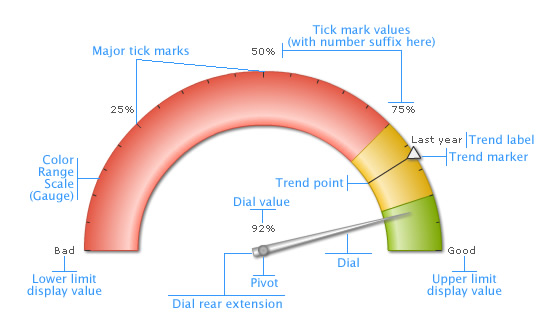

Angular Gauge > Elements of the gauge |
An angular gauge chart consists of the following elements:
Here we’ll see each of them in detail. Let’s first have a look at a standard angular gauge chart enlisting the various basic components: |
|  |
| Color Range The angular chart displays the data values on a radial scale. The radial scale is marked by a lower limit and an upper limit, i.e. the minimum and maximum values that can be plotted on the chart. Within that scale, you can create various sections to classify your data - each section can have a different background color, border color etc. to differentiate them from one another. These sections are called color ranges. In the above chart, we have 3 color ranges marked as green, yellow and red. There can be any number of color ranges. For each color range, you’ll have to specify the minimum and maximum values, and the hex color code for the range. Note: Each color range should have its own unique range value. That is say, if a range is defined as 0-50, the next range should have the minimum value as 50 necessarily. It cannot have anything other than this. Similarly, if the upper limit of the chart is 100, the last range should have max value as 100. Dials (Data Indicators) Tick Marks
For all the tick marks, you can specify the color, height and thickness. You can also specify the number of tick makrs that you want to have on the chart. You have the option to show/hide the tick mark values as well. Tool Tip Trend Points / Trend arcs / Trend markers Annotations Now that you know the potential of the angular chart, let's go ahead and build a sample angular gauge. |